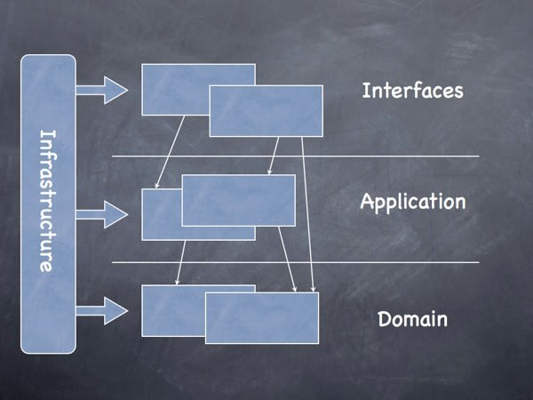
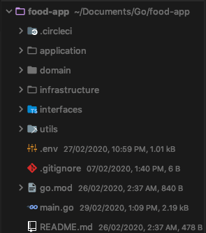
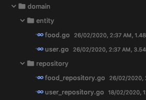
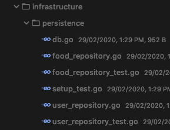
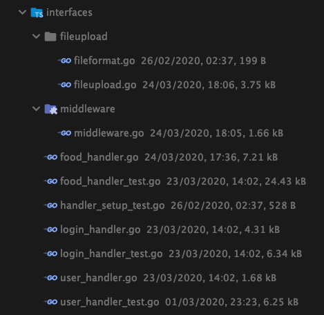

Reference
https://dev.to/stevensunflash/using-domain-driven-design-ddd-in-golang-3ee5 https://github.com/victorsteven/food-app-server
DDD(Domain Driven Design)
DDD의 4Layers

-
Domain : domain이 위치하고, 애플리케이션의 비즈니스로직이 정의된 곳
-
Infrastructure : 애플리케이션과 독립적인 모든 것이 존재하는 곳(외부 라이브러리, 데이터베이스 엔진 등)
-
Application : domain과 interface 사이의 통로. interface layer에서 domain layer로 요청을 보내고 응답을 반환
-
Interface : 웹 서비스, RIM 인터페이스 웹 애플리케이션, 배치 프로세스 등 다른 시스템과 상호작용 하는 모든 것이 위치
시작
이 프로젝트는 구조는 아래와 같다.

이 애플리케이션에서는, postgres와 redis를 DB로 사용할 것이다.
root 폴더에 아래와 같은 .env 파일이 필요하다.
#Postgres
APP_ENV=local
API_PORT=8888
DB_HOST=127.0.0.1
DB_DRIVER=postgres
ACCESS_SECRET=98hbun98h
REFRESH_SECRET=786dfdbjhsb
DB_USER=steven
DB_PASSWORD=password
DB_NAME=food-app
DB_PORT=5432
#Postgres Test DB
TEST_DB_DRIVER=postgres
TEST_DB_HOST=127.0.0.1
TEST_DB_PASSWORD=password
TEST_DB_USER=steven
TEST_DB_NAME=food-app-test
TEST_DB_PORT=5432
#Redis
REDIS_HOST=127.0.0.1
REDIS_PORT=6379
REDIS_PASSWORD=
Domain Layer
domain을 먼저 생각해보자. 도메인은 몇 가지 패턴을 갖고 있다.
Entity, Value, Repository, Service 등등.

간단하게 2가지 도메인 패턴만을 생각해보자(entity, repository)
Entity
스키마 같은 것을 정의하는 곳.
예를 들어, 여기에는 user structure를 정의하였다.
package entity
import (
"food-app/infrastructure/security"
"github.com/badoux/checkmail"
"html"
"strings"
"time"
)
type User struct {
ID uint64 `gorm:"primary_key;auto_increment" json:"id"`
FirstName string `gorm:"size:100;not null;" json:"first_name"`
LastName string `gorm:"size:100;not null;" json:"last_name"`
Email string `gorm:"size:100;not null;unique" json:"email"`
Password string `gorm:"size:100;not null;" json:"password"`
CreatedAt time.Time `gorm:"default:CURRENT_TIMESTAMP" json:"created_at"`
UpdatedAt time.Time `gorm:"default:CURRENT_TIMESTAMP" json:"updated_at"`
DeletedAt *time.Time `json:"deleted_at,omitempty"`
}
type PublicUser struct {
ID uint64 `gorm:"primary_key;auto_increment" json:"id"`
FirstName string `gorm:"size:100;not null;" json:"first_name"`
LastName string `gorm:"size:100;not null;" json:"last_name"`
}
//BeforeSave is a gorm hook
func (u *User) BeforeSave() error {
hashPassword, err := security.Hash(u.Password)
if err != nil {
return err
}
u.Password = string(hashPassword)
return nil
}
type Users []User
//So that we dont expose the user's email address and password to the world
func (users Users) PublicUsers() []interface{} {
result := make([]interface{}, len(users))
for index, user := range users {
result[index] = user.PublicUser()
}
return result
}
//So that we dont expose the user's email address and password to the world
func (u *User) PublicUser() interface{} {
return &PublicUser{
ID: u.ID,
FirstName: u.FirstName,
LastName: u.LastName,
}
}
func (u *User) Prepare() {
u.FirstName = html.EscapeString(strings.TrimSpace(u.FirstName))
u.LastName = html.EscapeString(strings.TrimSpace(u.LastName))
u.Email = html.EscapeString(strings.TrimSpace(u.Email))
u.CreatedAt = time.Now()
u.UpdatedAt = time.Now()
}
func (u *User) Validate(action string) map[string]string {
var errorMessages = make(map[string]string)
var err error
switch strings.ToLower(action) {
case "update":
if u.Email == "" {
errorMessages["email_required"] = "email required"
}
if u.Email != "" {
if err = checkmail.ValidateFormat(u.Email); err != nil {
errorMessages["invalid_email"] = "email email"
}
}
case "login":
if u.Password == "" {
errorMessages["password_required"] = "password is required"
}
if u.Email == "" {
errorMessages["email_required"] = "email is required"
}
if u.Email != "" {
if err = checkmail.ValidateFormat(u.Email); err != nil {
errorMessages["invalid_email"] = "please provide a valid email"
}
}
case "forgotpassword":
if u.Email == "" {
errorMessages["email_required"] = "email required"
}
if u.Email != "" {
if err = checkmail.ValidateFormat(u.Email); err != nil {
errorMessages["invalid_email"] = "please provide a valid email"
}
}
default:
if u.FirstName == "" {
errorMessages["firstname_required"] = "first name is required"
}
if u.LastName == "" {
errorMessages["lastname_required"] = "last name is required"
}
if u.Password == "" {
errorMessages["password_required"] = "password is required"
}
if u.Password != "" && len(u.Password) < 6 {
errorMessages["invalid_password"] = "password should be at least 6 characters"
}
if u.Email == "" {
errorMessages["email_required"] = "email is required"
}
if u.Email != "" {
if err = checkmail.ValidateFormat(u.Email); err != nil {
errorMessages["invalid_email"] = "please provide a valid email"
}
}
}
return errorMessages
}
Repository
repository는 infrastructure에서 구현할 method의 집합을 정의한다.
package repository
import (
"food-app/domain/entity"
)
type UserRepository interface {
SaveUser(*entity.User) (*entity.User, map[string]string)
GetUser(uint64) (*entity.User, error)
GetUsers() ([]entity.User, error)
GetUserByEmailAndPassword(*entity.User) (*entity.User, map[string]string)
}
Infrastructure Layer
repository에 정의된 method를 구현.
method는 database 또는 third-party API와 상호작용한다.
여기에서는 database와의 작용만을 생각해 볼 것이다.

package persistence
import (
"errors"
"food-app/domain/entity"
"food-app/domain/repository"
"food-app/infrastructure/security"
"github.com/jinzhu/gorm"
"golang.org/x/crypto/bcrypt"
"strings"
)
type UserRepo struct {
db *gorm.DB
}
func NewUserRepository(db *gorm.DB) *UserRepo {
return &UserRepo{db}
}
//UserRepo implements the repository.UserRepository interface
var _ repository.UserRepository = &UserRepo{}
func (r *UserRepo) SaveUser(user *entity.User) (*entity.User, map[string]string) {
dbErr := map[string]string{}
err := r.db.Debug().Create(&user).Error
if err != nil {
//If the email is already taken
if strings.Contains(err.Error(), "duplicate") || strings.Contains(err.Error(), "Duplicate") {
dbErr["email_taken"] = "email already taken"
return nil, dbErr
}
//any other db error
dbErr["db_error"] = "database error"
return nil, dbErr
}
return user, nil
}
func (r *UserRepo) GetUser(id uint64) (*entity.User, error) {
var user entity.User
err := r.db.Debug().Where("id = ?", id).Take(&user).Error
if err != nil {
return nil, err
}
if gorm.IsRecordNotFoundError(err) {
return nil, errors.New("user not found")
}
return &user, nil
}
func (r *UserRepo) GetUsers() ([]entity.User, error) {
var users []entity.User
err := r.db.Debug().Find(&users).Error
if err != nil {
return nil, err
}
if gorm.IsRecordNotFoundError(err) {
return nil, errors.New("user not found")
}
return users, nil
}
func (r *UserRepo) GetUserByEmailAndPassword(u *entity.User) (*entity.User, map[string]string) {
var user entity.User
dbErr := map[string]string{}
err := r.db.Debug().Where("email = ?", u.Email).Take(&user).Error
if gorm.IsRecordNotFoundError(err) {
dbErr["no_user"] = "user not found"
return nil, dbErr
}
if err != nil {
dbErr["db_error"] = "database error"
return nil, dbErr
}
//Verify the password
err = security.VerifyPassword(user.Password, u.Password)
if err != nil && err == bcrypt.ErrMismatchedHashAndPassword {
dbErr["incorrect_password"] = "incorrect password"
return nil, dbErr
}
return &user, nil
}
db.go 파일도 살펴보자
package persistence
import (
"fmt"
"food-app/domain/entity"
"food-app/domain/repository"
"github.com/jinzhu/gorm"
_ "github.com/jinzhu/gorm/dialects/postgres"
)
type Repositories struct {
User repository.UserRepository
Food repository.FoodRepository
db *gorm.DB
}
func NewRepositories(Dbdriver, DbUser, DbPassword, DbPort, DbHost, DbName string) (*Repositories, error) {
DBURL := fmt.Sprintf("host=%s port=%s user=%s dbname=%s sslmode=disable password=%s", DbHost, DbPort, DbUser, DbName, DbPassword)
db, err := gorm.Open(Dbdriver, DBURL)
if err != nil {
return nil, err
}
db.LogMode(true)
return &Repositories{
User: NewUserRepository(db),
Food: NewFoodRepository(db),
db: db,
}, nil
}
//closes the database connection
func (s *Repositories) Close() error {
return s.db.Close()
}
//This migrate all tables
func (s *Repositories) Automigrate() error {
return s.db.AutoMigrate(&entity.User{}, &entity.Food{}).Error
}
위 파일에서 모든 repository를 갖고 있는 Repositories structure를 정의하였다.
또한 Repositories는 db instance를 갖고 있어서 user와 food repository의 생성자로 주입된다.
Application Layer
application은 domain과 interface에 연결한다.
user application을 살펴보자
package application
import (
"food-app/domain/entity"
"food-app/domain/repository"
)
type userApp struct {
us repository.UserRepository
}
//UserApp implements the UserAppInterface
var _ UserAppInterface = &userApp{}
type UserAppInterface interface {
SaveUser(*entity.User) (*entity.User, map[string]string)
GetUsers() ([]entity.User, error)
GetUser(uint64) (*entity.User, error)
GetUserByEmailAndPassword(*entity.User) (*entity.User, map[string]string)
}
func (u *userApp) SaveUser(user *entity.User) (*entity.User, map[string]string) {
return u.us.SaveUser(user)
}
func (u *userApp) GetUser(userId uint64) (*entity.User, error) {
return u.us.GetUser(userId)
}
func (u *userApp) GetUsers() ([]entity.User, error) {
return u.us.GetUsers()
}
func (u *userApp) GetUserByEmailAndPassword(user *entity.User) (*entity.User, map[string]string) {
return u.us.GetUserByEmailAndPassword(user)
}
UserApp은 UserRepository를 갖고있어 repository의 method를 호출할 수 있게 해준다.
Interface Layer
interface는 HTTP request와 response를 담당한다.
여기서 인증, 유저관련, 음식관련 request를 받아들인다.

User Handler
save, get 등의 user 관련 method가 정의되어 있음.
package interfaces
import (
"food-app/application"
"food-app/domain/entity"
"food-app/infrastructure/auth"
"github.com/gin-gonic/gin"
"net/http"
"strconv"
)
//Users struct defines the dependencies that will be used
type Users struct {
us application.UserAppInterface
rd auth.AuthInterface
tk auth.TokenInterface
}
//Users constructor
func NewUsers(us application.UserAppInterface, rd auth.AuthInterface, tk auth.TokenInterface) *Users {
return &Users{
us: us,
rd: rd,
tk: tk,
}
}
func (s *Users) SaveUser(c *gin.Context) {
var user entity.User
if err := c.ShouldBindJSON(&user); err != nil {
c.JSON(http.StatusUnprocessableEntity, gin.H{
"invalid_json": "invalid json",
})
return
}
//validate the request:
validateErr := user.Validate("")
if len(validateErr) > 0 {
c.JSON(http.StatusUnprocessableEntity, validateErr)
return
}
newUser, err := s.us.SaveUser(&user)
if err != nil {
c.JSON(http.StatusInternalServerError, err)
return
}
c.JSON(http.StatusCreated, newUser.PublicUser())
}
func (s *Users) GetUsers(c *gin.Context) {
users := entity.Users{} //customize user
var err error
//us, err = application.UserApp.GetUsers()
users, err = s.us.GetUsers()
if err != nil {
c.JSON(http.StatusInternalServerError, err.Error())
return
}
c.JSON(http.StatusOK, users.PublicUsers())
}
func (s *Users) GetUser(c *gin.Context) {
userId, err := strconv.ParseUint(c.Param("user_id"), 10, 64)
if err != nil {
c.JSON(http.StatusBadRequest, err.Error())
return
}
user, err := s.us.GetUser(userId)
if err != nil {
c.JSON(http.StatusInternalServerError, err.Error())
return
}
c.JSON(http.StatusOK, user.PublicUser())
}
Authentication Handler
login_handler 는 로그인, 로그아웃, 리프레시 토큰 등의 method를 담당.
package interfaces
import (
"fmt"
"food-app/application"
"food-app/domain/entity"
"food-app/infrastructure/auth"
"github.com/dgrijalva/jwt-go"
"github.com/gin-gonic/gin"
"net/http"
"os"
"strconv"
)
type Authenticate struct {
us application.UserAppInterface
rd auth.AuthInterface
tk auth.TokenInterface
}
//Authenticate constructor
func NewAuthenticate(uApp application.UserAppInterface, rd auth.AuthInterface, tk auth.TokenInterface) *Authenticate {
return &Authenticate{
us: uApp,
rd: rd,
tk: tk,
}
}
func (au *Authenticate) Login(c *gin.Context) {
var user *entity.User
var tokenErr = map[string]string{}
if err := c.ShouldBindJSON(&user); err != nil {
c.JSON(http.StatusUnprocessableEntity, "Invalid json provided")
return
}
//validate request:
validateUser := user.Validate("login")
if len(validateUser) > 0 {
c.JSON(http.StatusUnprocessableEntity, validateUser)
return
}
u, userErr := au.us.GetUserByEmailAndPassword(user)
if userErr != nil {
c.JSON(http.StatusInternalServerError, userErr)
return
}
ts, tErr := au.tk.CreateToken(u.ID)
if tErr != nil {
tokenErr["token_error"] = tErr.Error()
c.JSON(http.StatusUnprocessableEntity, tErr.Error())
return
}
saveErr := au.rd.CreateAuth(u.ID, ts)
if saveErr != nil {
c.JSON(http.StatusInternalServerError, saveErr.Error())
return
}
userData := make(map[string]interface{})
userData["access_token"] = ts.AccessToken
userData["refresh_token"] = ts.RefreshToken
userData["id"] = u.ID
userData["first_name"] = u.FirstName
userData["last_name"] = u.LastName
c.JSON(http.StatusOK, userData)
}
func (au *Authenticate) Logout(c *gin.Context) {
//check is the user is authenticated first
metadata, err := au.tk.ExtractTokenMetadata(c.Request)
if err != nil {
c.JSON(http.StatusUnauthorized, "Unauthorized")
return
}
//if the access token exist and it is still valid, then delete both the access token and the refresh token
deleteErr := au.rd.DeleteTokens(metadata)
if deleteErr != nil {
c.JSON(http.StatusUnauthorized, deleteErr.Error())
return
}
c.JSON(http.StatusOK, "Successfully logged out")
}
//Refresh is the function that uses the refresh_token to generate new pairs of refresh and access tokens.
func (au *Authenticate) Refresh(c *gin.Context) {
mapToken := map[string]string{}
if err := c.ShouldBindJSON(&mapToken); err != nil {
c.JSON(http.StatusUnprocessableEntity, err.Error())
return
}
refreshToken := mapToken["refresh_token"]
//verify the token
token, err := jwt.Parse(refreshToken, func(token *jwt.Token) (interface{}, error) {
//Make sure that the token method conform to "SigningMethodHMAC"
if _, ok := token.Method.(*jwt.SigningMethodHMAC); !ok {
return nil, fmt.Errorf("unexpected signing method: %v", token.Header["alg"])
}
return []byte(os.Getenv("REFRESH_SECRET")), nil
})
//any error may be due to token expiration
if err != nil {
c.JSON(http.StatusUnauthorized, err.Error())
return
}
//is token valid?
if _, ok := token.Claims.(jwt.Claims); !ok && !token.Valid {
c.JSON(http.StatusUnauthorized, err)
return
}
//Since token is valid, get the uuid:
claims, ok := token.Claims.(jwt.MapClaims)
if ok && token.Valid {
refreshUuid, ok := claims["refresh_uuid"].(string) //convert the interface to string
if !ok {
c.JSON(http.StatusUnprocessableEntity, "Cannot get uuid")
return
}
userId, err := strconv.ParseUint(fmt.Sprintf("%.f", claims["user_id"]), 10, 64)
if err != nil {
c.JSON(http.StatusUnprocessableEntity, "Error occurred")
return
}
//Delete the previous Refresh Token
delErr := au.rd.DeleteRefresh(refreshUuid)
if delErr != nil { //if any goes wrong
c.JSON(http.StatusUnauthorized, "unauthorized")
return
}
//Create new pairs of refresh and access tokens
ts, createErr := au.tk.CreateToken(userId)
if createErr != nil {
c.JSON(http.StatusForbidden, createErr.Error())
return
}
//save the tokens metadata to redis
saveErr := au.rd.CreateAuth(userId, ts)
if saveErr != nil {
c.JSON(http.StatusForbidden, saveErr.Error())
return
}
tokens := map[string]string{
"access_token": ts.AccessToken,
"refresh_token": ts.RefreshToken,
}
c.JSON(http.StatusCreated, tokens)
} else {
c.JSON(http.StatusUnauthorized, "refresh token expired")
}
}
Running the Application
main.go 에서는 route 정의, db에 연결, 애플리케이션 시작 등의 기능을 하고 있다.
package main
import (
"food-app/infrastructure/auth"
"food-app/infrastructure/persistence"
"food-app/interfaces"
"food-app/interfaces/fileupload"
"food-app/interfaces/middleware"
"github.com/gin-gonic/gin"
"github.com/joho/godotenv"
"log"
"os"
)
func init() {
//To load our environmental variables.
if err := godotenv.Load(); err != nil {
log.Println("no env gotten")
}
}
func main() {
dbdriver := os.Getenv("DB_DRIVER")
host := os.Getenv("DB_HOST")
password := os.Getenv("DB_PASSWORD")
user := os.Getenv("DB_USER")
dbname := os.Getenv("DB_NAME")
port := os.Getenv("DB_PORT")
//redis details
redis_host := os.Getenv("REDIS_HOST")
redis_port := os.Getenv("REDIS_PORT")
redis_password := os.Getenv("REDIS_PASSWORD")
services, err := persistence.NewRepositories(dbdriver, user, password, port, host, dbname)
if err != nil {
panic(err)
}
defer services.Close()
services.Automigrate()
redisService, err := auth.NewRedisDB(redis_host, redis_port, redis_password)
if err != nil {
log.Fatal(err)
}
tk := auth.NewToken()
fd := fileupload.NewFileUpload()
users := interfaces.NewUsers(services.User, redisService.Auth, tk)
foods := interfaces.NewFood(services.Food, services.User, fd, redisService.Auth, tk)
authenticate := interfaces.NewAuthenticate(services.User, redisService.Auth, tk)
r := gin.Default()
r.Use(middleware.CORSMiddleware()) //For CORS
//user routes
r.POST("/users", users.SaveUser)
r.GET("/users", users.GetUsers)
r.GET("/users/:user_id", users.GetUser)
//post routes
r.POST("/food", middleware.AuthMiddleware(), middleware.MaxSizeAllowed(8192000), foods.SaveFood)
r.PUT("/food/:food_id", middleware.AuthMiddleware(), middleware.MaxSizeAllowed(8192000), foods.UpdateFood)
r.GET("/food/:food_id", foods.GetFoodAndCreator)
r.DELETE("/food/:food_id", middleware.AuthMiddleware(), foods.DeleteFood)
r.GET("/food", foods.GetAllFood)
//authentication routes
r.POST("/login", authenticate.Login)
r.POST("/logout", authenticate.Logout)
r.POST("/refresh", authenticate.Refresh)
//Starting the application
app_port := os.Getenv("PORT") //using heroku host
if app_port == "" {
app_port = "8888" //localhost
}
log.Fatal(r.Run(":"+app_port))
}
Middleware
위 main.go 파일에서 특정 route는 제한되어 있다. AuthMiddleware는 인증되지 않은 유저의 접근을 제한할 것이다.
CORSMiddleware는 다른 domain으로의 data 전송을 허용해준다.
MaxSizeAllowed는 미들웨어에서 제한된 사이즈 이상의 파일의 업로드를 막아준다.
package middleware
import (
"bytes"
"food-app/infrastructure/auth"
"github.com/gin-gonic/gin"
"io/ioutil"
"net/http"
)
func AuthMiddleware() gin.HandlerFunc {
return func(c *gin.Context) {
err := auth.TokenValid(c.Request)
if err != nil {
c.JSON(http.StatusUnauthorized, gin.H{
"status": http.StatusUnauthorized,
"error": err.Error(),
})
c.Abort()
return
}
c.Next()
}
}
func CORSMiddleware() gin.HandlerFunc {
return func(c *gin.Context) {
c.Writer.Header().Set("Access-Control-Allow-Origin", "*")
c.Writer.Header().Set("Access-Control-Allow-Credentials", "true")
c.Writer.Header().Set("Access-Control-Allow-Headers", "Content-Type, Content-Length, Accept-Encoding, X-CSRF-Token, Authorization, accept, origin, Cache-Control, X-Requested-With")
c.Writer.Header().Set("Access-Control-Allow-Methods", "POST, OPTIONS, GET, PUT, PATCH, DELETE")
if c.Request.Method == "OPTIONS" {
c.AbortWithStatus(204)
return
}
c.Next()
}
}
//Avoid a large file from loading into memory
//If the file size is greater than 8MB dont allow it to even load into memory and waste our time.
func MaxSizeAllowed(n int64) gin.HandlerFunc {
return func(c *gin.Context) {
c.Request.Body = http.MaxBytesReader(c.Writer, c.Request.Body, n)
buff, errRead := c.GetRawData()
if errRead != nil {
//c.JSON(http.StatusRequestEntityTooLarge,"too large")
c.JSON(http.StatusRequestEntityTooLarge, gin.H{
"status": http.StatusRequestEntityTooLarge,
"upload_err": "too large: upload an image less than 8MB",
})
c.Abort()
return
}
buf := bytes.NewBuffer(buff)
c.Request.Body = ioutil.NopCloser(buf)
}
}